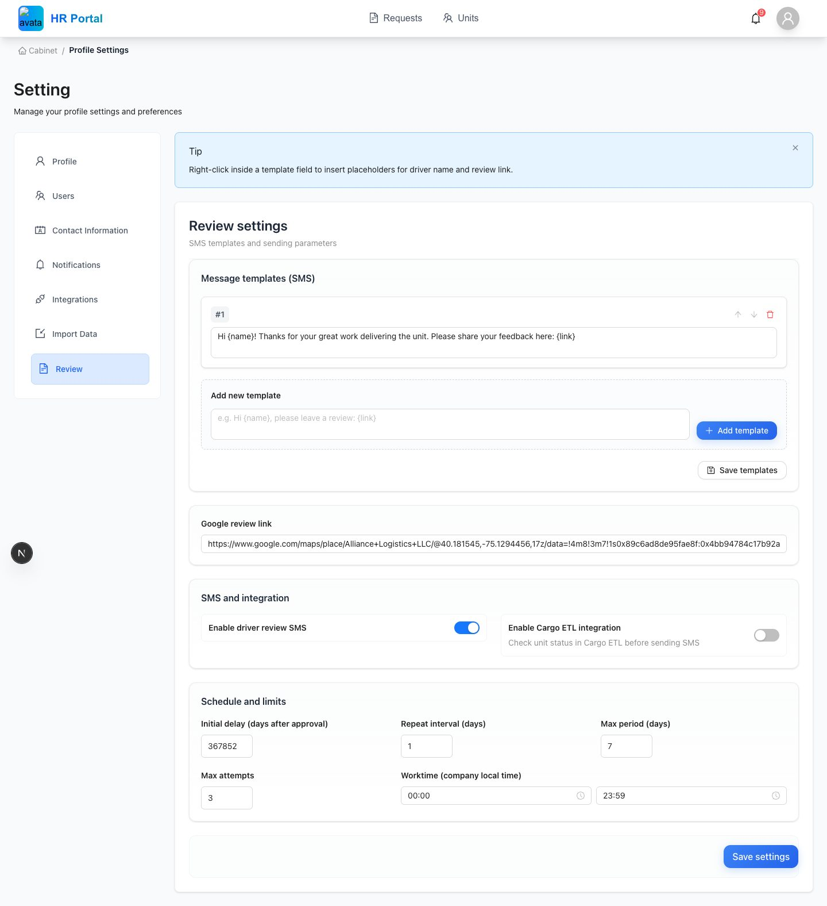
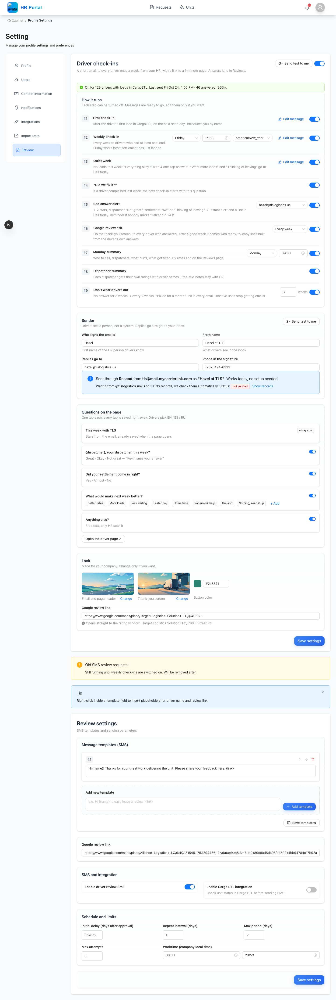
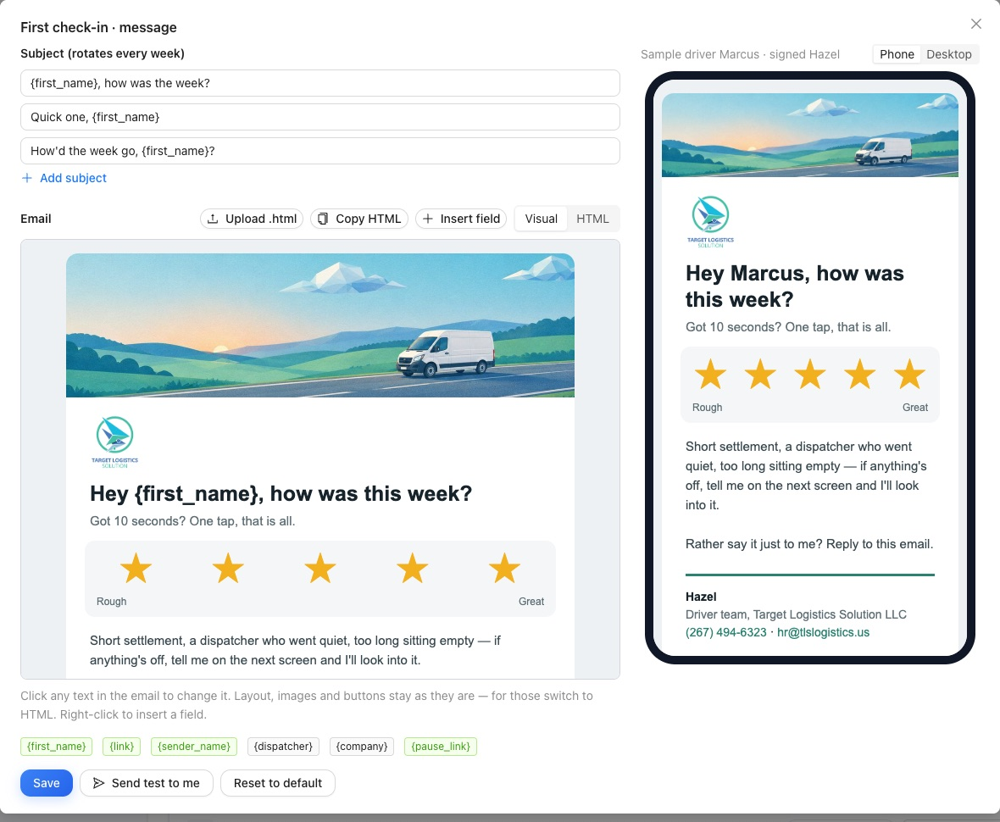
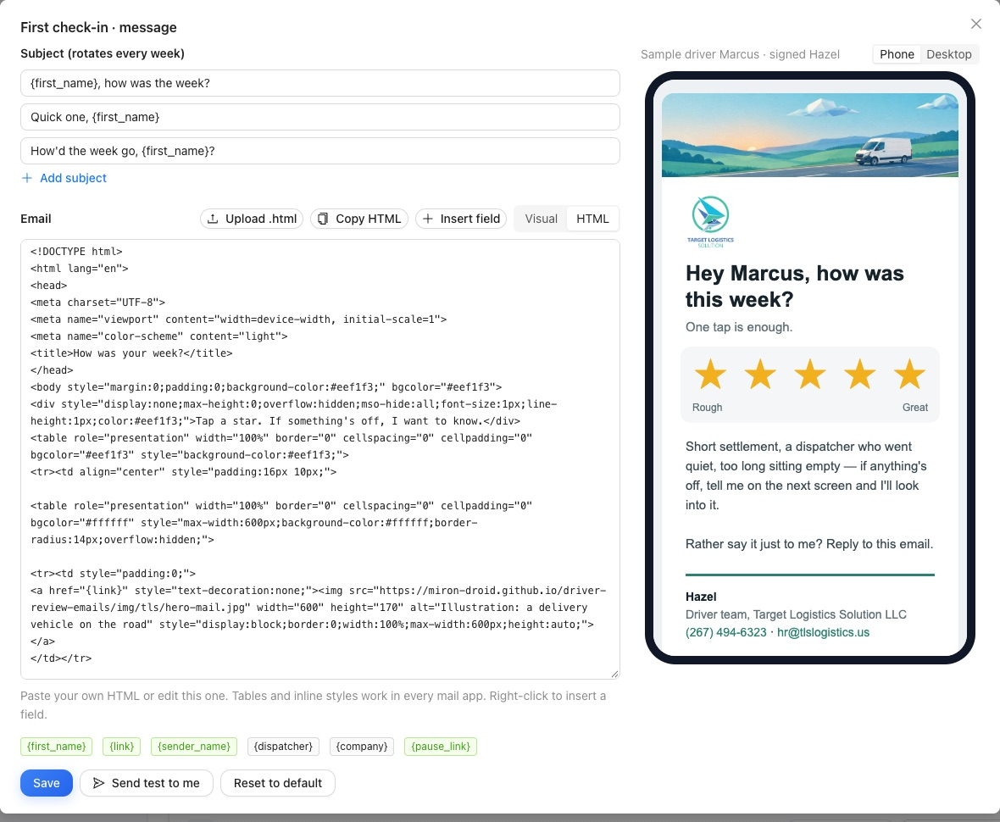
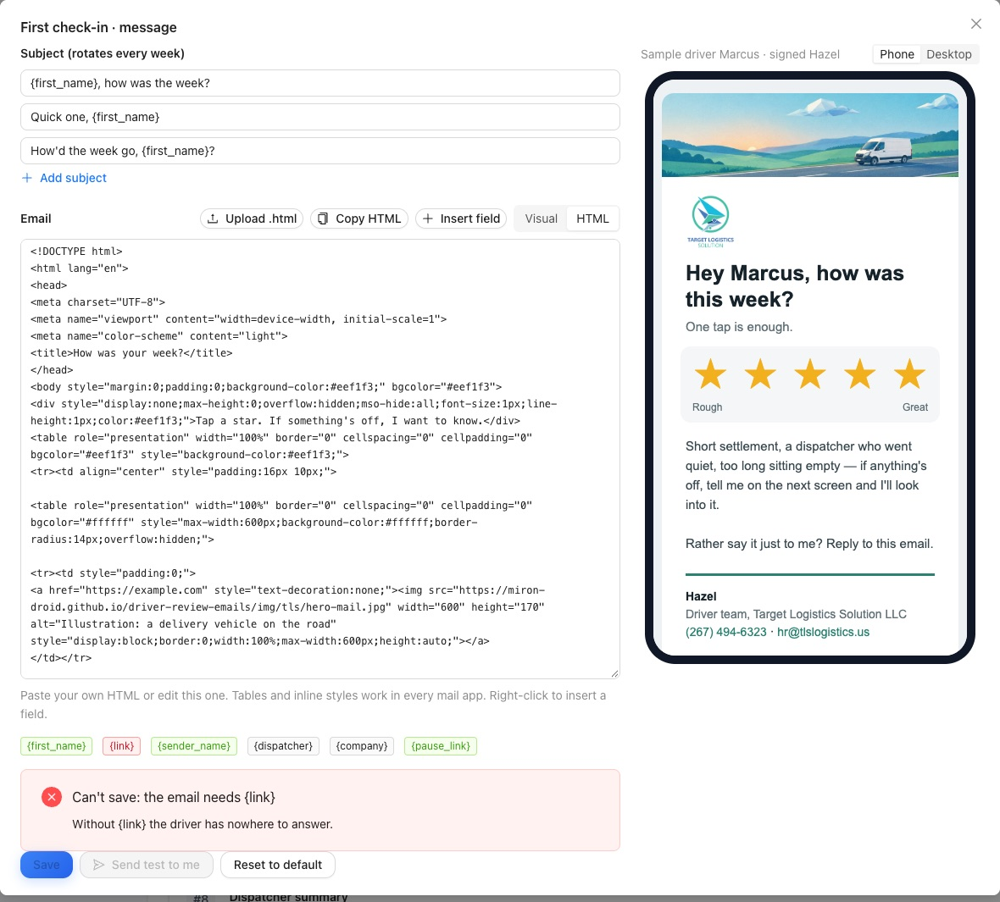
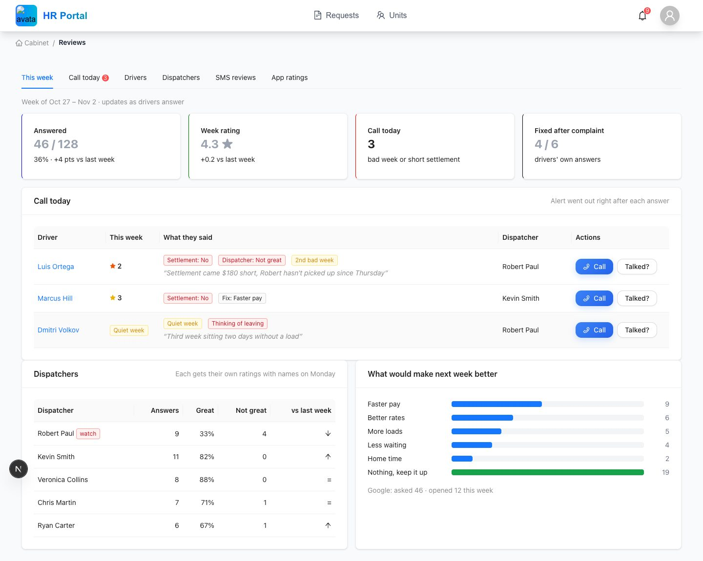
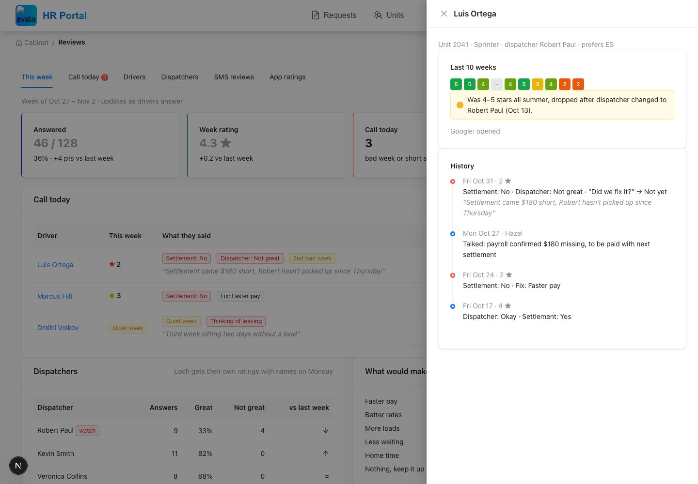
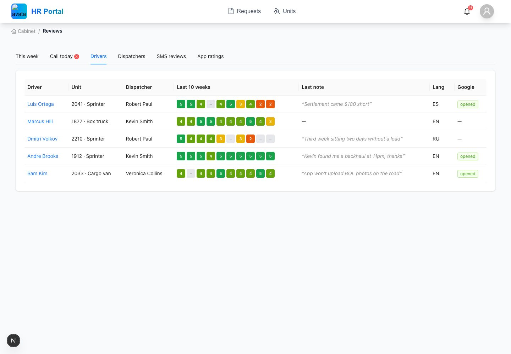
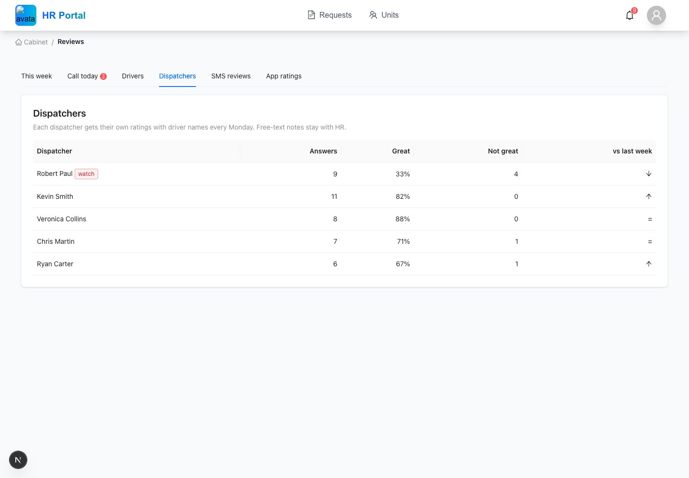

Сняты с настоящего фронта HR-портала (код репозитория, ветка proto/driver-checkins), запущенного локально. Новые экраны собраны из тех же компонентов, данные на них выдуманные. Ничего не сохраняется.


Эйчар кликает в текст письма и меняет его. Справа сразу видно, как письмо придёт водителю на телефон, с его именем и подписью эйчара.

Как шаблоны Load Confirmation в CargoETL: компания вставляет свой HTML или загружает файл .html. Поля вставляются правой кнопкой или кнопкой Insert field.

Если в HTML нет {link} (ссылки на опрос) или {pause_link}, сохранить нельзя. Скрипты вырезаются.




